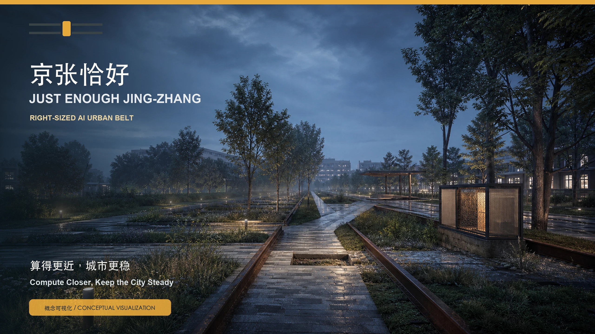
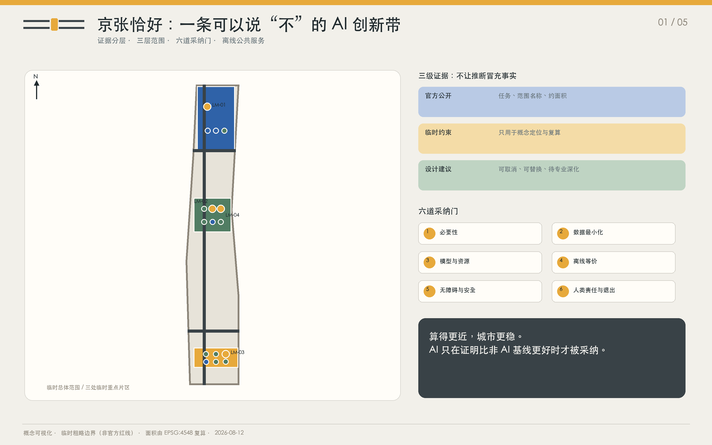
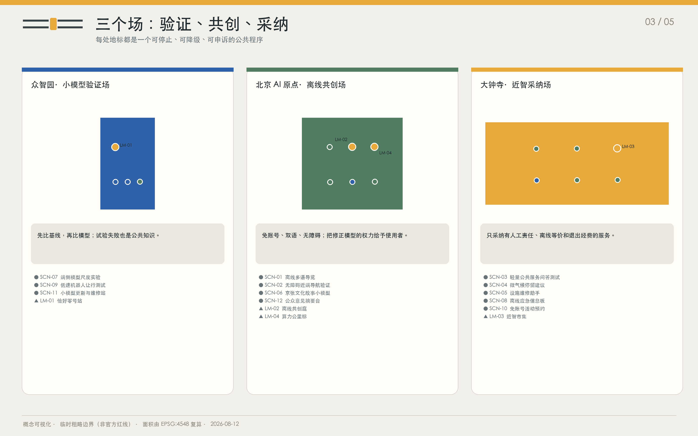
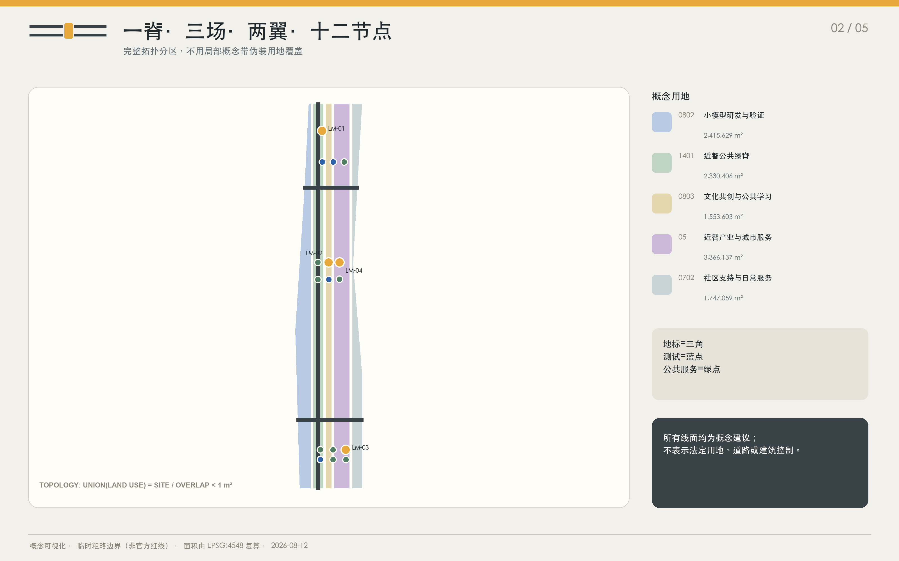
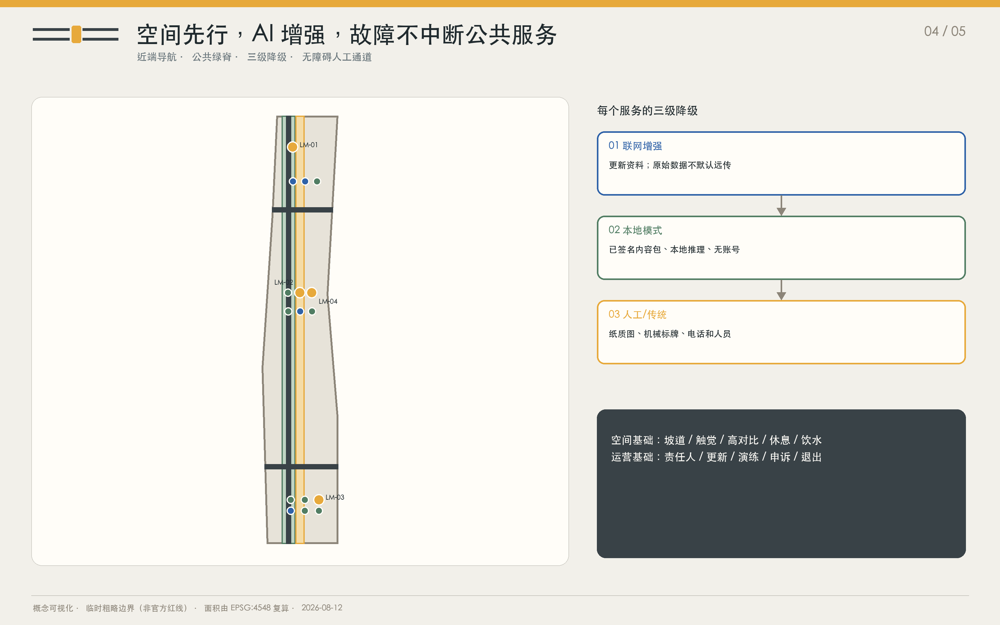
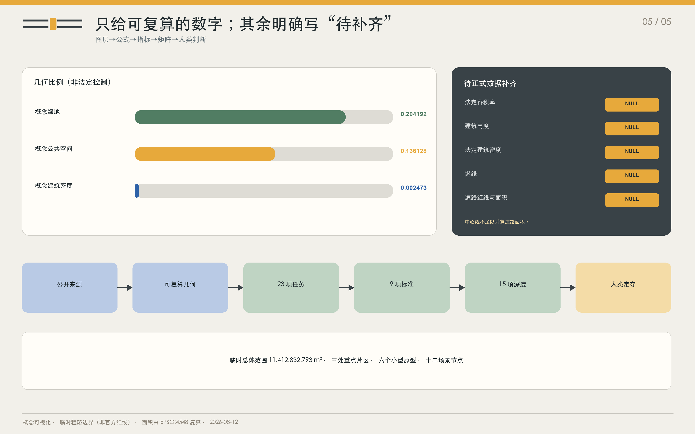

统筹研究范围
43.6 km² · 战略与产业叙事，非本包几何边界。

小模型、近计算、可离线的 AI 城市
算得更近，城市更稳 / Compute Closer, Keep the City Steady
概念可视化 / CONCEPTUAL VISUALIZATION一条能明确说“不”的 AI 创新带：先用空间和人工完成公共服务，再让最小充分模型做可撤回的增强。

总览地图 · 三层范围 · 重点区域 · 用地分区 · 交通慢行 · 蓝绿公共空间 · 建筑 · 更新项目 · AI 场景 · 核心指标 · 任务覆盖 · 自检状态 · 来源 · 假设
43.6 平方公里统筹研究范围承接战略叙事；11.4 平方公里临时总体范围承接可复算空间；三处临时重点片区承接可停止的公共程序。
43.6 km² · 战略与产业叙事，非本包几何边界。
11,412,832.793 m² · 临时粗略边界，可复算，非官方红线。
3 · 临时几何承载详细概念。
如果不使用 AI，任务是否仍能做得同样好？
数据能否留在产生它的地方？
断网后，公众能否在不求助技术人员的情况下继续使用？
降级过程是否连续、可见且可演练？
公众是否知道这个系统消耗什么、谁在管理？
谁有权否决模型建议，公众去哪里申诉？
每处地标既是空间节点，也是有责任人、可申诉、能退出的公共程序。
先比基线，再比模型；试验失败也是公共知识。
免账号、双语、无障碍，把修正模型的权力交给使用者。
只采纳有人工责任、离线等价和退出经费的服务。

完整拓扑分区和三级降级服务共同保证：网络或模型故障不会中断基本公共服务。


层数仅用于概念比较；法定高度、密度、退线与建筑方案待正式资料和专业设计。
完整拓扑分区和三级降级服务共同保证：网络或模型故障不会中断基本公共服务。
本节与 04A 共用同源图层，独立锚点用于离线评审导航。
六个原型不主张已批准建筑量，仅测试长期运营和维修空间。
四个验证场景以可复现失败为知识；其余场景同样具备数据边界、离线等价、人类责任人与退出条件。
下载一次即可离线使用的京张历史、场所与公共服务导览。
以真实路面、坡度、施工围挡与休息点测试个性化无障碍路径。
在限定政策文档上回答低风险事项，为每个答案显示来源与人工窗口。
将场地级温湿度、风、遮阴与座椅状态转成易理解的停留选择。
在现场终端上识别常见设施编号与维修手册步骤，工单由人员确认。
以经编辑的历史素材生成分龄、双语的短故事，现场显示原始档案线索。
让参与者在同一公共任务上比较规则系统与不同尺度模型的质量、时延和概念性资源目标。
本地存储避险路线、集结点与应急卡片，联网时只同步经签名的更新。
在封闭可见的试验环上测试低速运输设备对儿童、轮椅和盲杖用户的让行。
使用一次性取号码和现场候补机制分配公共活动名额。
为公共终端提供可签名、可回滚、可查看版本说明的现场更新服务。
把经参与者确认公开的意见聚类为可追溯摘要，保留少数观点与原文入口。
一个公开比较“不用 AI、小模型、远端模型”的城市任务试验站。
一个不靠账号和持续联网也能参与设计、讲述与评议的公共客厅。
将轻量公共服务、日常维修和免账号活动组合成可见的城市采纳前台。
沿京张遗址公园分布的小型公共信息节点，把计算位置、资源目标、更新与责任人做成可读地标。
这不是能耗或性能实测，而是帮助评审比较三种服务架构的数据触达、维护负担和公共连续性。
示意比较，不是实测数据。采纳必须另行通过安全、无障碍、离线、维护和公众利益验证。
36 秒静音概念演示，不含实测性能或必要音频信息。 阅读双语文字稿
从公开来源到人类定夺，所有推断都保持来源、假设和状态；未知项不使用假精度填补。

16 条来源逐项说明可用于什么、不可用于什么。技术文件只能支持方法，不证明场地性能。
sources.json · standard_matrix.json · compliance_matrix.json7 项假设连接缺失资料、设计影响与后续采纳门。
assumptions.json · metrics.json · self_check.json从公开来源到人类定夺，所有推断都保持来源、假设和状态；未知项不使用假精度填补。
proposal.md · proposal.en.mdreport/copyright_statement.md · manifest.json